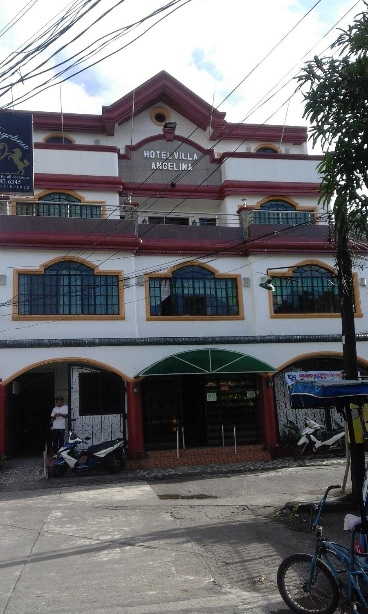
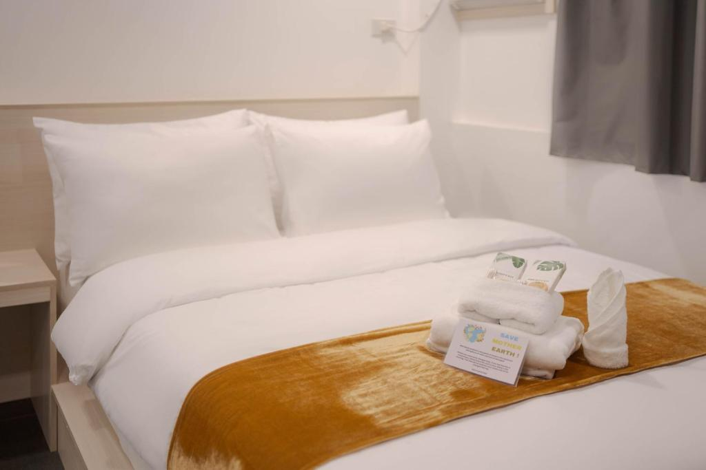
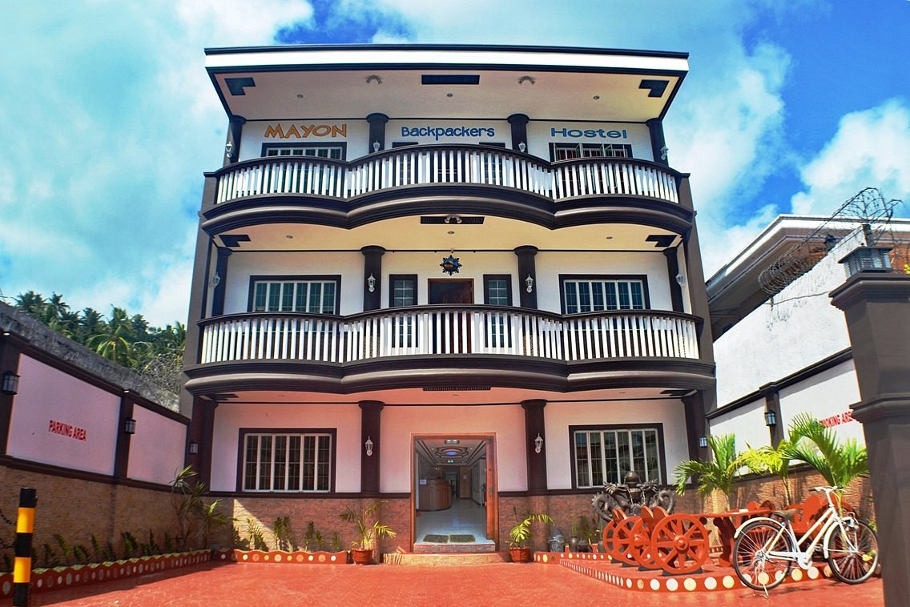

Affordable places to stay for students, backpackers, families, and travelers who want comfort and value.
Budget hotels in Albay are perfect for travelers who want a clean, simple, and comfortable place to stay without spending too much. These hotels are often located near transport terminals, restaurants, and tourist attractions, making them practical for short trips and vacations.

Location: Legazpi City, Albay
₱1,000 – ₱1,500 per night
A simple and affordable hotel for travelers who want easy access to the city, transport, and local food spots.

Location: Daraga, Albay
₱1,200 – ₱1,800 per night
A practical place to stay for solo travelers, students, and backpackers looking for a budget-friendly room.

Location: Camalig, Albay
₱1,300 – ₱1,900 per night
A cozy and affordable hotel where guests can enjoy comfort and a relaxing stay while exploring Albay.
Budget hotels are great for travelers who want to save money while still enjoying a safe and comfortable stay.
Many budget hotels are near city centers, terminals, food areas, and tourist destinations.
These hotels are ideal for short stays, quick trips, school travel, and simple family vacations.
Book your hotel early during holidays and weekends because rooms may fill up faster. Check if the hotel is near the places you want to visit, and always compare the room price, amenities, and guest reviews before booking. It is also helpful to ask if breakfast, parking, or Wi-Fi is already included.